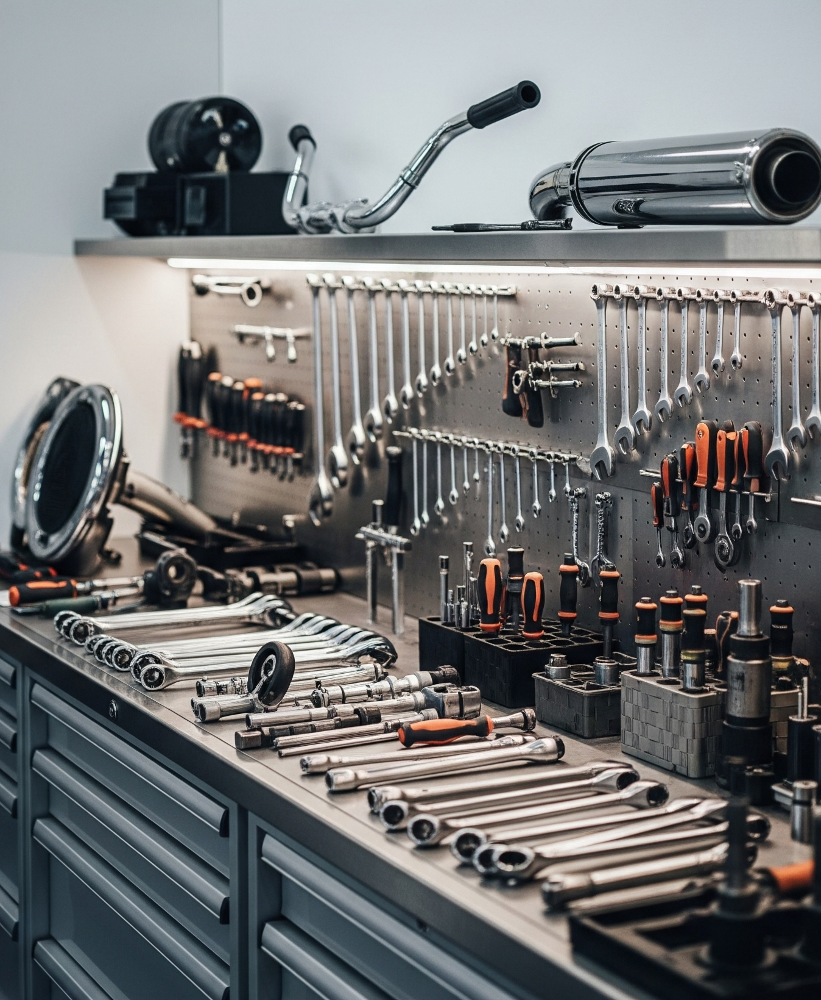

Sobre a Lucas Motos
Fundada em 2018, a Lucas Motos nasceu da paixão por motocicletas e do compromisso com a qualidade. Ao longo dos anos, nos especializamos em manutenção, conserto e personalização de motos, sempre buscando atualização e excelência em cada serviço.
Trabalhamos com atenção aos detalhes, utilizando peças de qualidade e tecnologia moderna para garantir a segurança e o desempenho da sua moto.
Nosso maior objetivo é a satisfação dos nossos clientes. Por isso, prezamos pelo atendimento personalizado, transparência e respeito. Cada moto que passa por aqui recebe o nosso melhor, porque sabemos o quanto ela é importante para você.
Venha conhecer a Lucas Motos e faça parte dessa história de confiança, dedicação e amor pelo universo duas rodas!
